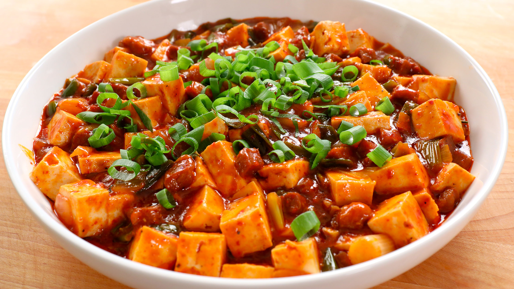

What is Mapo Tofu, you ask?
A traditional Sichuan dish, mapo tofu, or Ma Po Dou Fu, is made with simmered medium-firm silken tofu flavored with fermented bean paste, beef, plenty of red-hot roasted chili oil, and a handful of Sichuan peppercorns. When done right, the dish comes out with a thick coating of hot chili oil covering its surface, keeping the contents underneath hot in both senses of the word. It's a great representation of málà, or hot and numbing flavor.
